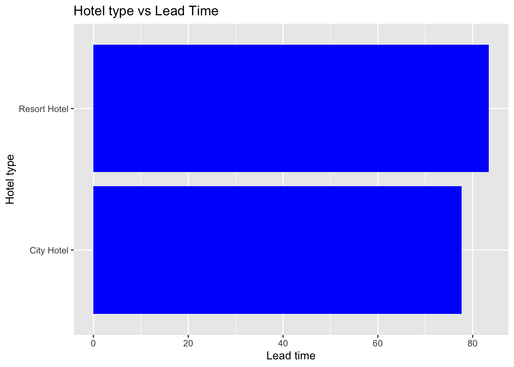
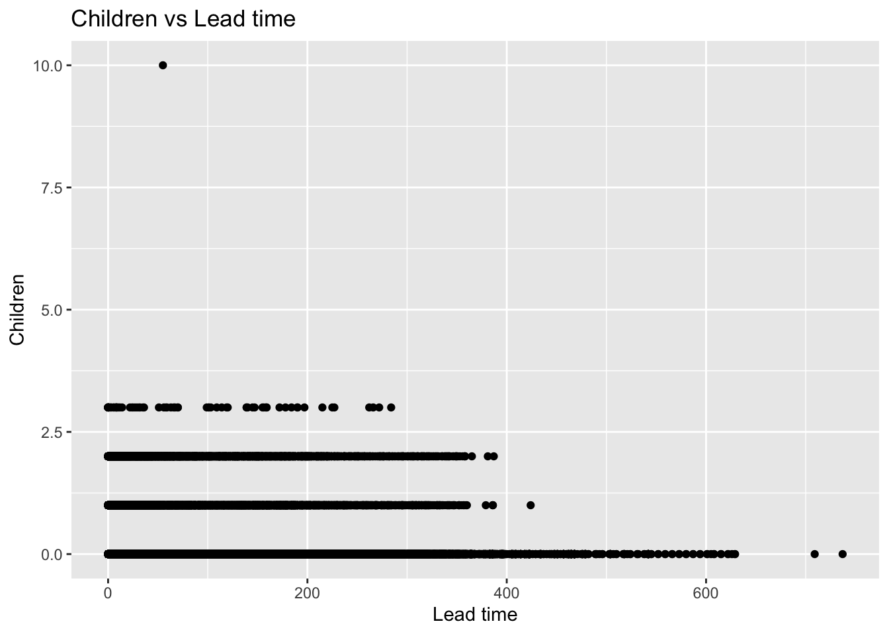
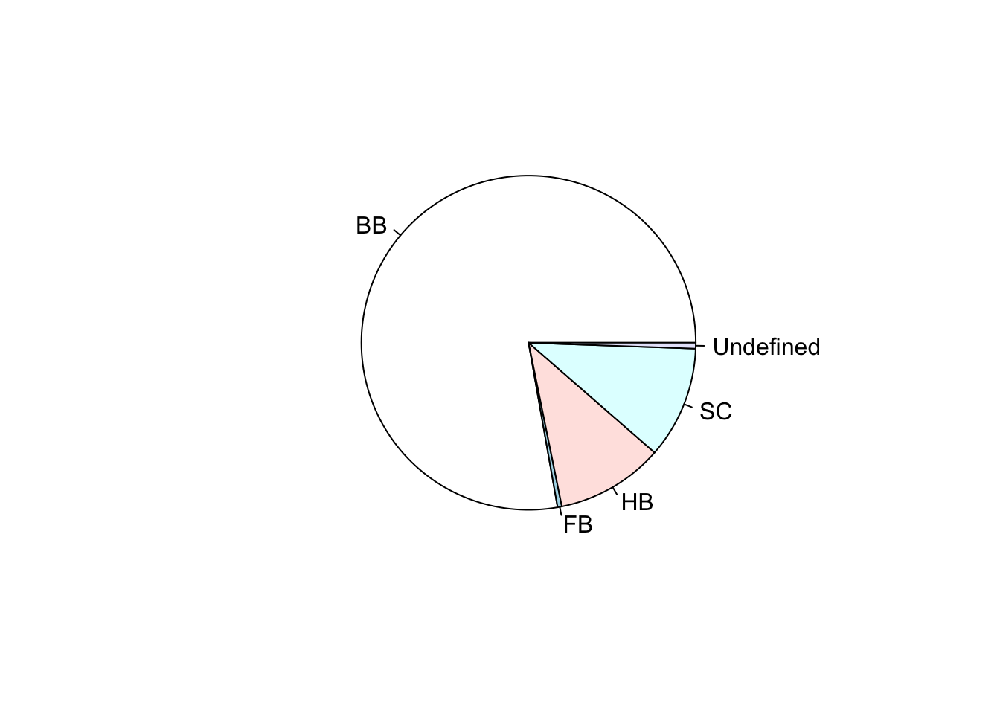
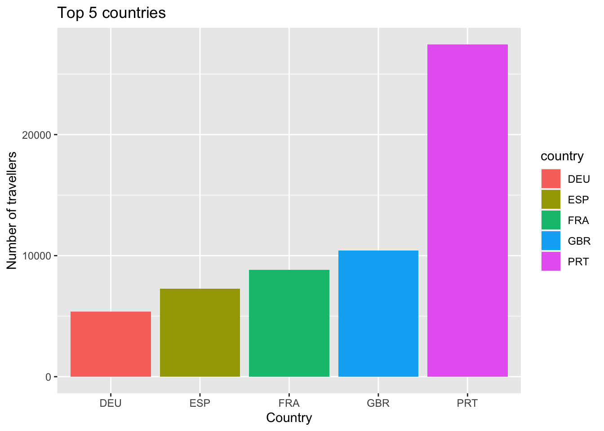
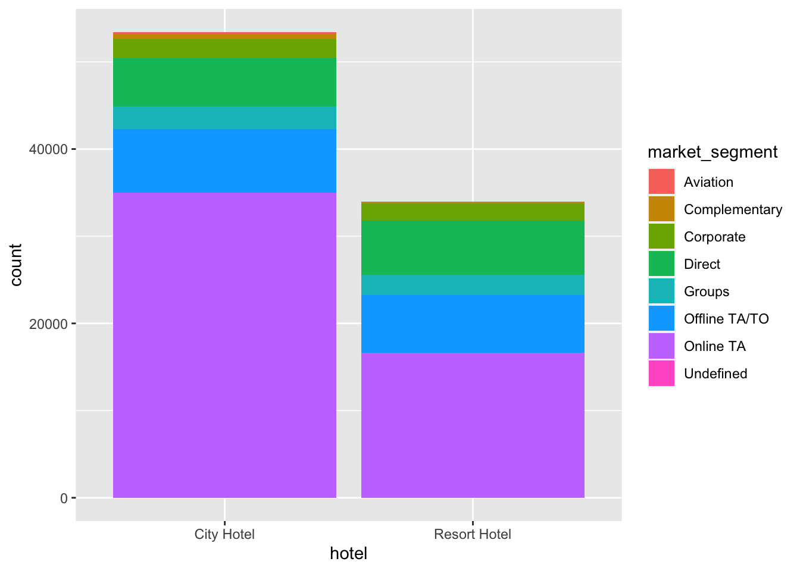
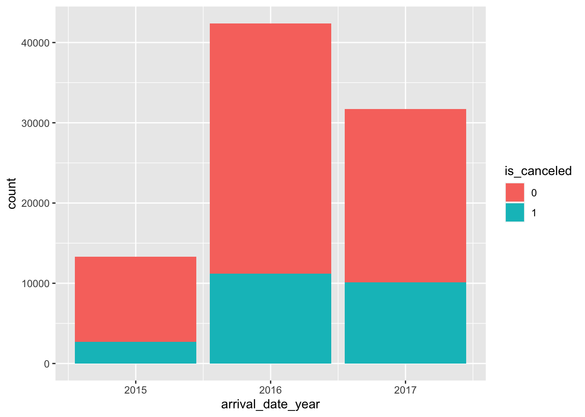
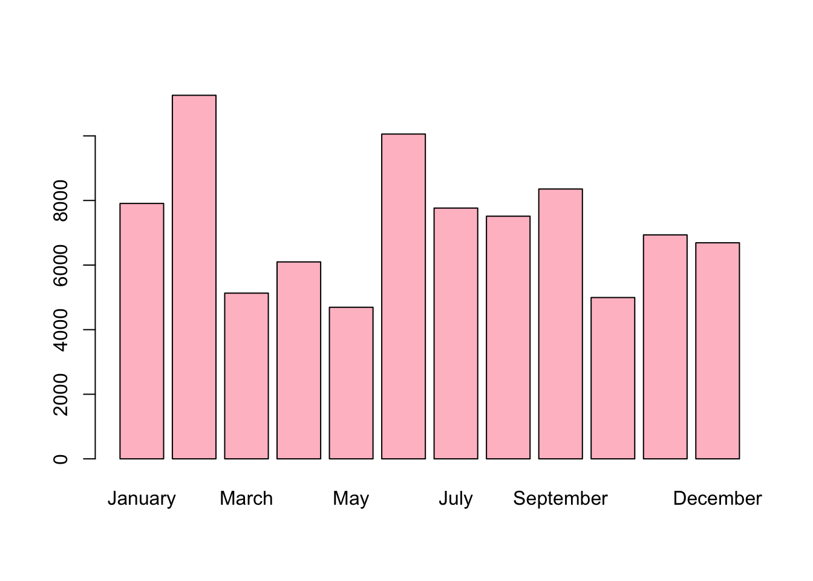

Code
library(tidyverse)
knitr::opts_chunk$set(echo = TRUE)Shreya Varma
July 8, 2023
I will be using the Hotel Bookings dataset for my Homework. I have imported it using the read_csv() function and will use the glimpse() function the see the columns it has. On a high level it seems to have the information of hotel type and its customer data like arrival departure information, number of people, their booking details, payment type and reservation details. The data has 119,390 rows and 32 columns. To get more insights I will use the summary() function. From the summary we can see the data captured is from 2015 to 2017.
Rows: 119390 Columns: 32
── Column specification ────────────────────────────────────────────────────────
Delimiter: ","
chr (13): hotel, arrival_date_month, meal, country, market_segment, distrib...
dbl (18): is_canceled, lead_time, arrival_date_year, arrival_date_week_numb...
date (1): reservation_status_date
ℹ Use `spec()` to retrieve the full column specification for this data.
ℹ Specify the column types or set `show_col_types = FALSE` to quiet this message.# A tibble: 6 × 32
hotel is_canceled lead_time arrival_date_year arrival_date_month
<chr> <dbl> <dbl> <dbl> <chr>
1 Resort Hotel 0 342 2015 July
2 Resort Hotel 0 737 2015 July
3 Resort Hotel 0 7 2015 July
4 Resort Hotel 0 13 2015 July
5 Resort Hotel 0 14 2015 July
6 Resort Hotel 0 14 2015 July
# ℹ 27 more variables: arrival_date_week_number <dbl>,
# arrival_date_day_of_month <dbl>, stays_in_weekend_nights <dbl>,
# stays_in_week_nights <dbl>, adults <dbl>, children <dbl>, babies <dbl>,
# meal <chr>, country <chr>, market_segment <chr>,
# distribution_channel <chr>, is_repeated_guest <dbl>,
# previous_cancellations <dbl>, previous_bookings_not_canceled <dbl>,
# reserved_room_type <chr>, assigned_room_type <chr>, …Rows: 119,390
Columns: 32
$ hotel <chr> "Resort Hotel", "Resort Hotel", "Resort…
$ is_canceled <dbl> 0, 0, 0, 0, 0, 0, 0, 0, 1, 1, 1, 0, 0, …
$ lead_time <dbl> 342, 737, 7, 13, 14, 14, 0, 9, 85, 75, …
$ arrival_date_year <dbl> 2015, 2015, 2015, 2015, 2015, 2015, 201…
$ arrival_date_month <chr> "July", "July", "July", "July", "July",…
$ arrival_date_week_number <dbl> 27, 27, 27, 27, 27, 27, 27, 27, 27, 27,…
$ arrival_date_day_of_month <dbl> 1, 1, 1, 1, 1, 1, 1, 1, 1, 1, 1, 1, 1, …
$ stays_in_weekend_nights <dbl> 0, 0, 0, 0, 0, 0, 0, 0, 0, 0, 0, 0, 0, …
$ stays_in_week_nights <dbl> 0, 0, 1, 1, 2, 2, 2, 2, 3, 3, 4, 4, 4, …
$ adults <dbl> 2, 2, 1, 1, 2, 2, 2, 2, 2, 2, 2, 2, 2, …
$ children <dbl> 0, 0, 0, 0, 0, 0, 0, 0, 0, 0, 0, 0, 0, …
$ babies <dbl> 0, 0, 0, 0, 0, 0, 0, 0, 0, 0, 0, 0, 0, …
$ meal <chr> "BB", "BB", "BB", "BB", "BB", "BB", "BB…
$ country <chr> "PRT", "PRT", "GBR", "GBR", "GBR", "GBR…
$ market_segment <chr> "Direct", "Direct", "Direct", "Corporat…
$ distribution_channel <chr> "Direct", "Direct", "Direct", "Corporat…
$ is_repeated_guest <dbl> 0, 0, 0, 0, 0, 0, 0, 0, 0, 0, 0, 0, 0, …
$ previous_cancellations <dbl> 0, 0, 0, 0, 0, 0, 0, 0, 0, 0, 0, 0, 0, …
$ previous_bookings_not_canceled <dbl> 0, 0, 0, 0, 0, 0, 0, 0, 0, 0, 0, 0, 0, …
$ reserved_room_type <chr> "C", "C", "A", "A", "A", "A", "C", "C",…
$ assigned_room_type <chr> "C", "C", "C", "A", "A", "A", "C", "C",…
$ booking_changes <dbl> 3, 4, 0, 0, 0, 0, 0, 0, 0, 0, 0, 0, 0, …
$ deposit_type <chr> "No Deposit", "No Deposit", "No Deposit…
$ agent <chr> "NULL", "NULL", "NULL", "304", "240", "…
$ company <chr> "NULL", "NULL", "NULL", "NULL", "NULL",…
$ days_in_waiting_list <dbl> 0, 0, 0, 0, 0, 0, 0, 0, 0, 0, 0, 0, 0, …
$ customer_type <chr> "Transient", "Transient", "Transient", …
$ adr <dbl> 0.00, 0.00, 75.00, 75.00, 98.00, 98.00,…
$ required_car_parking_spaces <dbl> 0, 0, 0, 0, 0, 0, 0, 0, 0, 0, 0, 0, 0, …
$ total_of_special_requests <dbl> 0, 0, 0, 0, 1, 1, 0, 1, 1, 0, 0, 0, 3, …
$ reservation_status <chr> "Check-Out", "Check-Out", "Check-Out", …
$ reservation_status_date <date> 2015-07-01, 2015-07-01, 2015-07-02, 20… hotel is_canceled lead_time arrival_date_year
Length:119390 Min. :0.0000 Min. : 0 Min. :2015
Class :character 1st Qu.:0.0000 1st Qu.: 18 1st Qu.:2016
Mode :character Median :0.0000 Median : 69 Median :2016
Mean :0.3704 Mean :104 Mean :2016
3rd Qu.:1.0000 3rd Qu.:160 3rd Qu.:2017
Max. :1.0000 Max. :737 Max. :2017
arrival_date_month arrival_date_week_number arrival_date_day_of_month
Length:119390 Min. : 1.00 Min. : 1.0
Class :character 1st Qu.:16.00 1st Qu.: 8.0
Mode :character Median :28.00 Median :16.0
Mean :27.17 Mean :15.8
3rd Qu.:38.00 3rd Qu.:23.0
Max. :53.00 Max. :31.0
stays_in_weekend_nights stays_in_week_nights adults
Min. : 0.0000 Min. : 0.0 Min. : 0.000
1st Qu.: 0.0000 1st Qu.: 1.0 1st Qu.: 2.000
Median : 1.0000 Median : 2.0 Median : 2.000
Mean : 0.9276 Mean : 2.5 Mean : 1.856
3rd Qu.: 2.0000 3rd Qu.: 3.0 3rd Qu.: 2.000
Max. :19.0000 Max. :50.0 Max. :55.000
children babies meal country
Min. : 0.0000 Min. : 0.000000 Length:119390 Length:119390
1st Qu.: 0.0000 1st Qu.: 0.000000 Class :character Class :character
Median : 0.0000 Median : 0.000000 Mode :character Mode :character
Mean : 0.1039 Mean : 0.007949
3rd Qu.: 0.0000 3rd Qu.: 0.000000
Max. :10.0000 Max. :10.000000
NA's :4
market_segment distribution_channel is_repeated_guest
Length:119390 Length:119390 Min. :0.00000
Class :character Class :character 1st Qu.:0.00000
Mode :character Mode :character Median :0.00000
Mean :0.03191
3rd Qu.:0.00000
Max. :1.00000
previous_cancellations previous_bookings_not_canceled reserved_room_type
Min. : 0.00000 Min. : 0.0000 Length:119390
1st Qu.: 0.00000 1st Qu.: 0.0000 Class :character
Median : 0.00000 Median : 0.0000 Mode :character
Mean : 0.08712 Mean : 0.1371
3rd Qu.: 0.00000 3rd Qu.: 0.0000
Max. :26.00000 Max. :72.0000
assigned_room_type booking_changes deposit_type agent
Length:119390 Min. : 0.0000 Length:119390 Length:119390
Class :character 1st Qu.: 0.0000 Class :character Class :character
Mode :character Median : 0.0000 Mode :character Mode :character
Mean : 0.2211
3rd Qu.: 0.0000
Max. :21.0000
company days_in_waiting_list customer_type adr
Length:119390 Min. : 0.000 Length:119390 Min. : -6.38
Class :character 1st Qu.: 0.000 Class :character 1st Qu.: 69.29
Mode :character Median : 0.000 Mode :character Median : 94.58
Mean : 2.321 Mean : 101.83
3rd Qu.: 0.000 3rd Qu.: 126.00
Max. :391.000 Max. :5400.00
required_car_parking_spaces total_of_special_requests reservation_status
Min. :0.00000 Min. :0.0000 Length:119390
1st Qu.:0.00000 1st Qu.:0.0000 Class :character
Median :0.00000 Median :0.0000 Mode :character
Mean :0.06252 Mean :0.5714
3rd Qu.:0.00000 3rd Qu.:1.0000
Max. :8.00000 Max. :5.0000
reservation_status_date
Min. :2014-10-17
1st Qu.:2016-02-01
Median :2016-08-07
Mean :2016-07-30
3rd Qu.:2017-02-08
Max. :2017-09-14
We can now start cleaning the dataset. I will be checking if any columns have duplicate values, missing values, null values and remove irrelavent columns. I will also use data visualization to understand the data better.
# A tibble: 40,165 × 32
hotel is_canceled lead_time arrival_date_year arrival_date_month
<chr> <dbl> <dbl> <dbl> <chr>
1 Resort Hotel 0 14 2015 July
2 Resort Hotel 0 14 2015 July
3 Resort Hotel 0 72 2015 July
4 Resort Hotel 0 72 2015 July
5 Resort Hotel 0 70 2015 July
6 Resort Hotel 0 70 2015 July
7 Resort Hotel 1 5 2015 July
8 Resort Hotel 1 5 2015 July
9 Resort Hotel 0 0 2015 July
10 Resort Hotel 0 0 2015 July
# ℹ 40,155 more rows
# ℹ 27 more variables: arrival_date_week_number <dbl>,
# arrival_date_day_of_month <dbl>, stays_in_weekend_nights <dbl>,
# stays_in_week_nights <dbl>, adults <dbl>, children <dbl>, babies <dbl>,
# meal <chr>, country <chr>, market_segment <chr>,
# distribution_channel <chr>, is_repeated_guest <dbl>,
# previous_cancellations <dbl>, previous_bookings_not_canceled <dbl>, …Rows: 87,396
Columns: 32
$ hotel <chr> "Resort Hotel", "Resort Hotel", "Resort…
$ is_canceled <dbl> 0, 0, 0, 0, 0, 0, 0, 1, 1, 1, 0, 0, 0, …
$ lead_time <dbl> 342, 737, 7, 13, 14, 0, 9, 85, 75, 23, …
$ arrival_date_year <dbl> 2015, 2015, 2015, 2015, 2015, 2015, 201…
$ arrival_date_month <chr> "July", "July", "July", "July", "July",…
$ arrival_date_week_number <dbl> 27, 27, 27, 27, 27, 27, 27, 27, 27, 27,…
$ arrival_date_day_of_month <dbl> 1, 1, 1, 1, 1, 1, 1, 1, 1, 1, 1, 1, 1, …
$ stays_in_weekend_nights <dbl> 0, 0, 0, 0, 0, 0, 0, 0, 0, 0, 0, 0, 0, …
$ stays_in_week_nights <dbl> 0, 0, 1, 1, 2, 2, 2, 3, 3, 4, 4, 4, 4, …
$ adults <dbl> 2, 2, 1, 1, 2, 2, 2, 2, 2, 2, 2, 2, 2, …
$ children <dbl> 0, 0, 0, 0, 0, 0, 0, 0, 0, 0, 0, 0, 1, …
$ babies <dbl> 0, 0, 0, 0, 0, 0, 0, 0, 0, 0, 0, 0, 0, …
$ meal <chr> "BB", "BB", "BB", "BB", "BB", "BB", "FB…
$ country <chr> "PRT", "PRT", "GBR", "GBR", "GBR", "PRT…
$ market_segment <chr> "Direct", "Direct", "Direct", "Corporat…
$ distribution_channel <chr> "Direct", "Direct", "Direct", "Corporat…
$ is_repeated_guest <dbl> 0, 0, 0, 0, 0, 0, 0, 0, 0, 0, 0, 0, 0, …
$ previous_cancellations <dbl> 0, 0, 0, 0, 0, 0, 0, 0, 0, 0, 0, 0, 0, …
$ previous_bookings_not_canceled <dbl> 0, 0, 0, 0, 0, 0, 0, 0, 0, 0, 0, 0, 0, …
$ reserved_room_type <chr> "C", "C", "A", "A", "A", "C", "C", "A",…
$ assigned_room_type <chr> "C", "C", "C", "A", "A", "C", "C", "A",…
$ booking_changes <dbl> 3, 4, 0, 0, 0, 0, 0, 0, 0, 0, 0, 0, 1, …
$ deposit_type <chr> "No Deposit", "No Deposit", "No Deposit…
$ agent <chr> "NULL", "NULL", "NULL", "304", "240", "…
$ company <chr> "NULL", "NULL", "NULL", "NULL", "NULL",…
$ days_in_waiting_list <dbl> 0, 0, 0, 0, 0, 0, 0, 0, 0, 0, 0, 0, 0, …
$ customer_type <chr> "Transient", "Transient", "Transient", …
$ adr <dbl> 0.00, 0.00, 75.00, 75.00, 98.00, 107.00…
$ required_car_parking_spaces <dbl> 0, 0, 0, 0, 0, 0, 0, 0, 0, 0, 0, 0, 0, …
$ total_of_special_requests <dbl> 0, 0, 0, 0, 1, 0, 1, 1, 0, 0, 0, 3, 1, …
$ reservation_status <chr> "Check-Out", "Check-Out", "Check-Out", …
$ reservation_status_date <date> 2015-07-01, 2015-07-01, 2015-07-02, 20…# A tibble: 6 × 32
hotel is_canceled lead_time arrival_date_year arrival_date_month
<chr> <dbl> <dbl> <dbl> <chr>
1 Resort Hotel 0 342 2015 July
2 Resort Hotel 0 737 2015 July
3 Resort Hotel 0 7 2015 July
4 Resort Hotel 0 13 2015 July
5 Resort Hotel 0 14 2015 July
6 Resort Hotel 0 0 2015 July
# ℹ 27 more variables: arrival_date_week_number <dbl>,
# arrival_date_day_of_month <dbl>, stays_in_weekend_nights <dbl>,
# stays_in_week_nights <dbl>, adults <dbl>, children <dbl>, babies <dbl>,
# meal <chr>, country <chr>, market_segment <chr>,
# distribution_channel <chr>, is_repeated_guest <dbl>,
# previous_cancellations <dbl>, previous_bookings_not_canceled <dbl>,
# reserved_room_type <chr>, assigned_room_type <chr>, …
10 100 101 102 103 104 105 106 107 108 109 11 110
1 1 1 1 16 1 5 2 6 9 1 1 48
112 113 115 116 118 12 120 122 126 127 130 132 135
13 36 4 6 7 13 13 1 1 8 9 1 52
137 139 14 140 142 143 144 146 148 149 150 153 154
4 3 9 1 1 11 20 3 36 2 18 206 133
158 159 16 160 163 165 167 168 169 174 178 179 18
2 4 5 1 17 3 7 2 53 121 25 24 1
180 183 184 185 186 192 193 195 197 20 200 202 203
5 16 1 2 11 4 4 34 13 31 3 1 10
204 207 209 210 212 213 215 216 217 218 219 22 220
33 9 14 2 1 1 5 21 2 31 131 5 4
221 222 223 224 225 227 229 230 232 233 234 237 238
27 2 503 3 7 20 1 2 2 95 1 1 30
240 242 243 245 246 250 251 253 254 255 257 258 259
3 15 2 2 2 2 17 1 7 6 1 1 2
260 263 264 268 269 270 271 272 273 274 275 277 278
3 14 2 11 33 43 1 3 1 12 3 4 2
279 28 280 281 282 284 286 287 288 289 29 290 291
3 5 36 119 4 1 18 5 1 2 1 17 12
292 293 297 301 302 304 305 307 308 309 31 311 312
17 5 7 1 4 2 1 25 15 1 13 2 2
313 314 316 317 318 319 32 320 321 323 324 325 329
1 1 2 8 1 3 1 1 2 10 9 2 11
330 331 332 333 334 337 338 34 341 342 343 346 347
4 60 2 4 3 17 12 8 5 18 14 8 1
348 349 35 350 351 352 353 355 356 357 358 360 361
7 2 1 3 2 1 4 10 10 5 7 9 2
362 364 365 366 367 368 369 37 370 371 372 373 376
2 5 16 9 9 1 4 1 2 10 3 1 1
377 378 379 38 380 382 383 384 385 386 388 39 390
2 3 9 22 12 4 5 8 3 1 7 8 13
391 392 393 394 395 396 397 398 399 40 400 401 402
2 3 1 5 3 12 7 1 11 851 2 1 1
403 405 407 408 409 410 411 412 413 415 416 417 418
2 77 9 15 9 2 2 1 1 1 1 1 24
419 42 420 421 422 423 424 425 426 428 429 43 433
1 5 1 8 1 2 8 1 4 13 2 13 1
435 436 437 439 442 443 444 445 446 447 448 45 450
10 2 6 6 1 4 4 4 1 2 4 238 10
451 452 454 455 456 457 458 459 46 460 461 465 466
4 3 1 1 2 3 2 5 24 2 1 12 3
47 470 477 478 479 48 481 482 483 484 485 486 487
62 5 14 2 1 2 1 2 1 2 14 2 1
489 49 490 491 492 494 496 497 498 499 501 504 506
1 5 5 2 2 4 1 1 34 1 1 9 1
507 51 511 512 513 514 515 516 518 52 520 521 523
8 80 5 3 2 2 6 1 2 1 1 5 8
525 528 53 530 531 534 539 54 541 543 59 6 61
11 2 8 4 1 1 2 1 1 2 7 1 2
62 64 65 67 68 71 72 73 76 77 78 8 80
44 1 1 44 26 1 29 3 1 1 15 1 1
81 82 83 84 85 86 88 9 91 92 93 94 96
22 14 9 3 2 32 18 36 46 13 3 76 1
99 NULL
12 82137 Rows: 87,396
Columns: 31
$ hotel <chr> "Resort Hotel", "Resort Hotel", "Resort…
$ is_canceled <dbl> 0, 0, 0, 0, 0, 0, 0, 1, 1, 1, 0, 0, 0, …
$ lead_time <dbl> 342, 737, 7, 13, 14, 0, 9, 85, 75, 23, …
$ arrival_date_year <dbl> 2015, 2015, 2015, 2015, 2015, 2015, 201…
$ arrival_date_month <chr> "July", "July", "July", "July", "July",…
$ arrival_date_week_number <dbl> 27, 27, 27, 27, 27, 27, 27, 27, 27, 27,…
$ arrival_date_day_of_month <dbl> 1, 1, 1, 1, 1, 1, 1, 1, 1, 1, 1, 1, 1, …
$ stays_in_weekend_nights <dbl> 0, 0, 0, 0, 0, 0, 0, 0, 0, 0, 0, 0, 0, …
$ stays_in_week_nights <dbl> 0, 0, 1, 1, 2, 2, 2, 3, 3, 4, 4, 4, 4, …
$ adults <dbl> 2, 2, 1, 1, 2, 2, 2, 2, 2, 2, 2, 2, 2, …
$ children <dbl> 0, 0, 0, 0, 0, 0, 0, 0, 0, 0, 0, 0, 1, …
$ babies <dbl> 0, 0, 0, 0, 0, 0, 0, 0, 0, 0, 0, 0, 0, …
$ meal <chr> "BB", "BB", "BB", "BB", "BB", "BB", "FB…
$ country <chr> "PRT", "PRT", "GBR", "GBR", "GBR", "PRT…
$ market_segment <chr> "Direct", "Direct", "Direct", "Corporat…
$ distribution_channel <chr> "Direct", "Direct", "Direct", "Corporat…
$ is_repeated_guest <dbl> 0, 0, 0, 0, 0, 0, 0, 0, 0, 0, 0, 0, 0, …
$ previous_cancellations <dbl> 0, 0, 0, 0, 0, 0, 0, 0, 0, 0, 0, 0, 0, …
$ previous_bookings_not_canceled <dbl> 0, 0, 0, 0, 0, 0, 0, 0, 0, 0, 0, 0, 0, …
$ reserved_room_type <chr> "C", "C", "A", "A", "A", "C", "C", "A",…
$ assigned_room_type <chr> "C", "C", "C", "A", "A", "C", "C", "A",…
$ booking_changes <dbl> 3, 4, 0, 0, 0, 0, 0, 0, 0, 0, 0, 0, 1, …
$ deposit_type <chr> "No Deposit", "No Deposit", "No Deposit…
$ agent <chr> "NULL", "NULL", "NULL", "304", "240", "…
$ days_in_waiting_list <dbl> 0, 0, 0, 0, 0, 0, 0, 0, 0, 0, 0, 0, 0, …
$ customer_type <chr> "Transient", "Transient", "Transient", …
$ adr <dbl> 0.00, 0.00, 75.00, 75.00, 98.00, 107.00…
$ required_car_parking_spaces <dbl> 0, 0, 0, 0, 0, 0, 0, 0, 0, 0, 0, 0, 0, …
$ total_of_special_requests <dbl> 0, 0, 0, 0, 1, 0, 1, 1, 0, 0, 0, 3, 1, …
$ reservation_status <chr> "Check-Out", "Check-Out", "Check-Out", …
$ reservation_status_date <date> 2015-07-01, 2015-07-01, 2015-07-02, 20…From the summary we can see that mean lead time is 104 days which means that people book their stays approximately 3 to 3.5 months in advance. We can also check if the lead time is higher for Resort hotels vs for City hotels. My hypothesis is that it should be higher for Resort hotels since people book their vacations in advance but City hotels can be booked due to office work or immediate need basis too.
We can see that my hypothesis is not correct and the lead time for City hotels is slightly higher infact. This could also be due to the fact that we have more data of City hotels than Resort hotel. Almost twice. This could skew the lead time thus we cannot say for sure about lead time or analysis related to Hotel type.
lead_time_summary <- hotel_bookings %>%
group_by(hotel) %>%
summarize('mean_lead_time' = mean(lead_time), 'max_lead_time' = max(lead_time), 'min_lead_time' = min(lead_time))
ggplot(data = lead_time_summary, aes(x = mean_lead_time, y = hotel)) +
# Specify the type of plot and customize it as needed
geom_col(fill = "blue") +
labs(title = "Hotel type vs Lead Time", x = "Lead time", y = "Hotel type")
# A tibble: 2 × 2
# Groups: hotel [2]
hotel n
<chr> <int>
1 City Hotel 53428
2 Resort Hotel 33968We can instead check if Lead time is affected by people having children. It is possible that people with more children have a higher lead time. Thus I created the plot of children vs lead time. However we can see that people with 0 children have higher lead time. Thus the hypothesis is false.
Warning: Removed 4 rows containing missing values (`geom_point()`).

I also created a pie chart of meal types and most people opt only for bed and breakfast in hotels. This could also be because many hotels provide complimentary breakfast. This category is followed by HB (Half board) and SC(self catering). Thus some people also opt for breakfast and dinner in hotel and self catering meaning that they make their own arrangments. Very rarely people opt for all meals in hotel. This could help the hotels in making arrangements accordingly for respective meals and minimize food wastage.
We can also check top 5 which countries most people travel from to these hotels to market accordingly. We can see that most number of travellers are from PRT - Portugal followed by GBR - United Kingdom.

We see that most of the bookings comes from the market segment Online TA followed by Offline TA/TO. Thus most people book through travel agents or tour operators.

is_categorical <- class(hotel_bookings$is_canceled) == "factor" || is.character(hotel_bookings$is_canceled)
# Convert to categorical if not already
if (!is_categorical) {
hotel_bookings$is_canceled <- as.factor(hotel_bookings$is_canceled)
}
hotel_bookings%>%
ggplot(aes(x=arrival_date_year,fill=is_canceled)) + geom_bar()
I also created a plot of cancellations per year and we can see that 2016 had the most number of cancellations as well as bookings.

To check which months see most number of tourists I created a frequency bar plot of all months. February and June seem to have the highest number of tourists.
The marketing strategies that can be used to improve the inflow of tourists in hotels is still unanswered and I plan to cover that as part of my final project. I plan to do deeper analysis of the distribution channels and market segment data to develop better marketing.
A deeper analysis of hotel cancellations and trying to minimize / take some extra bookings based on that is something that is unanswered. I want to check if cancellations are related to hotel type, average daily rate, deposit type and other variables. I will be taking this up in my final project.
---
title: "Homework 3"
author: "Shreya Varma"
description: "Exploratory data analysis"
date: "07/08/2023"
format:
html:
toc: true
code-fold: true
code-copy: true
code-tools: true
categories:
- hw3
- shreya
- hotel_bookings.csv
---
```{r}
#| label: setup
#| warning: false
library(tidyverse)
knitr::opts_chunk$set(echo = TRUE)
```
## Read in the dataset
I will be using the Hotel Bookings dataset for my Homework. I have imported it using the read_csv() function and will use the glimpse() function the see the columns it has. On a high level it seems to have the information of hotel type and its customer data like arrival departure information, number of people, their booking details, payment type and reservation details. The data has 119,390 rows and 32 columns. To get more insights I will use the summary() function. From the summary we can see the data captured is from 2015 to 2017.
```{r}
hotel_bookings <- read_csv("_data/hotel_bookings.csv")
head(hotel_bookings)
glimpse(hotel_bookings)
summary(hotel_bookings)
```
## Clean the dataset
We can now start cleaning the dataset. I will be checking if any columns have duplicate values, missing values, null values and remove irrelavent columns. I will also use data visualization to understand the data better.
1. Duplicate values: I see that the data has duplicate rows thus I will drop it using the unique() function. Now the new data has 87,392 rows.
```{r}
duplicate_rows <- hotel_bookings[duplicated(hotel_bookings) | duplicated(hotel_bookings, fromLast = TRUE), ]
duplicate_rows
hotel_bookings <- unique(hotel_bookings)
glimpse(hotel_bookings)
```
2. Missing and Null values: We see that there are no missing values in the rows we have
```{r}
count_missing <- sum(is.na(hotel_bookings))
count_missing
```
3. Removing irrelevant data: Since 82k rows in Company column does not contain any data I am dropping the column.
```{r}
head(hotel_bookings)
table(hotel_bookings$company)
hotel_bookings <- hotel_bookings[, -which(names(hotel_bookings) == "company")]
glimpse(hotel_bookings)
```
## Data visualization
From the summary we can see that mean lead time is 104 days which means that people book their stays approximately 3 to 3.5 months in advance. We can also check if the lead time is higher for Resort hotels vs for City hotels. My hypothesis is that it should be higher for Resort hotels since people book their vacations in advance but City hotels can be booked due to office work or immediate need basis too.
We can see that my hypothesis is not correct and the lead time for City hotels is slightly higher infact. This could also be due to the fact that we have more data of City hotels than Resort hotel. Almost twice. This could skew the lead time thus we cannot say for sure about lead time or analysis related to Hotel type.
```{r}
lead_time_summary <- hotel_bookings %>%
group_by(hotel) %>%
summarize('mean_lead_time' = mean(lead_time), 'max_lead_time' = max(lead_time), 'min_lead_time' = min(lead_time))
ggplot(data = lead_time_summary, aes(x = mean_lead_time, y = hotel)) +
# Specify the type of plot and customize it as needed
geom_col(fill = "blue") +
labs(title = "Hotel type vs Lead Time", x = "Lead time", y = "Hotel type")
hotel_type_summary <- hotel_bookings %>%
group_by(hotel) %>% count()
hotel_type_summary
```
We can instead check if Lead time is affected by people having children. It is possible that people with more children have a higher lead time. Thus I created the plot of children vs lead time. However we can see that people with 0 children have higher lead time. Thus the hypothesis is false.
```{r}
ggplot(data = hotel_bookings, aes(x = lead_time, y = children)) +
geom_point() +
labs(title = "Children vs Lead time", x = "Lead time", y = "Children")
meal_counts <- table(hotel_bookings$meal)
pie(meal_counts, labels = names(meal_counts))
```
I also created a pie chart of meal types and most people opt only for bed and breakfast in hotels. This could also be because many hotels provide complimentary breakfast. This category is followed by HB (Half board) and SC(self catering). Thus some people also opt for breakfast and dinner in hotel and self catering meaning that they make their own arrangments. Very rarely people opt for all meals in hotel. This could help the hotels in making arrangements accordingly for respective meals and minimize food wastage.
We can also check top 5 which countries most people travel from to these hotels to market accordingly. We can see that most number of travellers are from PRT - Portugal followed by GBR - United Kingdom.
```{r}
country_data <- hotel_bookings %>% group_by(country) %>% count()
country_data <- head(arrange(country_data, desc(n)),5)
ggplot(data = country_data, aes(x = country, y = n, fill = country)) +
geom_bar(stat = "identity") +
labs(title = "Top 5 countries", x = "Country", y = "Number of travellers")
```
We see that most of the bookings comes from the market segment Online TA followed by Offline TA/TO. Thus most people book through travel agents or tour operators.
```{r}
hotel_bookings %>%
ggplot(mapping = aes(x=hotel, fill = market_segment)) + geom_bar()
is_categorical <- class(hotel_bookings$is_canceled) == "factor" || is.character(hotel_bookings$is_canceled)
# Convert to categorical if not already
if (!is_categorical) {
hotel_bookings$is_canceled <- as.factor(hotel_bookings$is_canceled)
}
hotel_bookings%>%
ggplot(aes(x=arrival_date_year,fill=is_canceled)) + geom_bar()
```
I also created a plot of cancellations per year and we can see that 2016 had the most number of cancellations as well as bookings.
```{r}
month_counts <- table(hotel_bookings$arrival_date_month)
barplot(month_counts, names.arg = month.name, col = 'pink')
```
To check which months see most number of tourists I created a frequency bar plot of all months. February and June seem to have the highest number of tourists.
## Limitations of Data Visualization
1. The marketing strategies that can be used to improve the inflow of tourists in hotels is still unanswered and I plan to cover that as part of my final project. I plan to do deeper analysis of the distribution channels and market segment data to develop better marketing.
2. A deeper analysis of hotel cancellations and trying to minimize / take some extra bookings based on that is something that is unanswered. I want to check if cancellations are related to hotel type, average daily rate, deposit type and other variables. I will be taking this up in my final project.